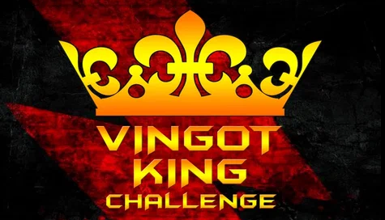

<section class="vingot">
  <div class="container">
    <ul class="crumbs">
      <li class="crumbs__item">
        <a href="../index.html">
          Главная
        </a>
      </li>
      <li class="crumbs__item">
        <a href="../blog_main.html">
          Блог
        </a>
      </li>
      <li class="crumbs__item">
        <a href="../grip.html">
          Дневник хвата
        </a>
      </li>
      <li class="crumbs__item">
        <a href="../vingot-king.html">
          Vingot King Challenge
        </a>
      </li>


    </ul>
    <article class="vingot__main">
      
      <h1 class="vingot__title">
        Vingot King Challenge (соревнования по силе хвата "Король Вингота" от рейтинга Grabhold)
      </h1>
      <article class="vingot__block">
        <p class="vingot__param">
          Vingot King Challenge - один из череды ежемесячных челленджей по армлифтингу и силе хвата от Grabhold. Итоги
          каждого из них суммируются и в конце года лидеру по сумме баллов присваивается почетный титул Grabhold King!
          Челлендж состоит из двух заданий: 1 - подъем максимального веса, 2 - удержание на время 25% веса от своего
          результата в первом задании.
        </p>
        <p class="vingot__param">
          Мой результат в Vingot King: 3 место в весовой категории "мужчины 100 кг и выше" и 2 место в общем итоге
          абсолютной категории!
        </p>

        <h2 class="vingot__subtitle">
          Немного о подготовке и выбранной стратегии
        </h2>
        <p class="vingot__param">
          Vingot +Ingot, 2 в 1 от Grabhold - это прямая и обратная трапеция, оба снаряда для щипкового хвата, с разным
          акцентом нагрузок: в Vingot активно нагружаются дистальные фаланги пальцев, а в Ingot средние (промежуточные)
          фаланги. Появился этот блок в моей коллекции относительно недавно, буквально 3 месяца назад. Первый месяц
          занимался с ним 1 раз в неделю, после чего отложил его на задний план, сделав основной акцент на тренировках с
          Ingot (про них расскажу в отдельной статье). Таким образом, первое знакомство с Vingot было достаточно
          поверхностным...
          Узнав о старте Vingot King Challenge, я начал свою подготовку за неделю: сделав прикидочную проходку узнал
          свой максимум в подъеме - 73кг. Так как в своих тренировках хвата я делаю основной акцент на удержания и
          выносливость, силовые подъёмы далеко не мой конек (об этом также напишу отдельно).
          Соревнование по Vingot проходило в режиме онлайн 3 недели, поэтому я решил пойти по классике и сделать 3
          попытки:
        </p>
          <p class="vingot__param">
          1 - подъём 65кг + удержание 49кг;
          </p>
          <p class="vingot__param">
          2 - подъём 70кг + удержание 52,5кг.
          </p>
          <p class="vingot__param">
          В третьей попытке я ориентировался уже не на 73кг, а на 74 - я использовал классическую схему силовой проходки
          в рамках месяца из пауэрлифтинга, где начиная от минимума шагаешь постепенно на увеличение веса, чтобы по
          итогу месяца преодолеть свой предыдущий максимум. В итоге я достаточно легко поднимаю 74кг, на удержание беру
          55,5кг и удерживаю на протяжении 50 секунд (результат, который и вывел меня в топ лидеров соревнования). Уже
          после этого просмотрев видео я понял, что в принципе был ещё запас пожалуй до 77-78кг в подъеме, но выработать
          его в рамках челленджа уже не успел.
          Итог - 3 место в весовой категории "мужчины свыше 100кг" (101 кг собственный вес) и 2 место в общем зачёте
          абсолютной категории!
          <p class="vingot__param">
          Справедливости ради отмечу, что были спортсмены с гораздо лучшими силовыми результатами, чем у меня, но в
          рамках данных соревнований ключевую роль играет индекс выносливости: отношение времени удержания к весу своего
          силового максимума.
          Результатом доволен: спасибо организатору соревнования и всем участникам - идём дальше!
        </p>
          </p>
        <div class="video-block">
          <iframe class="video-block__link" src="https://www.youtube.com/embed/CEH7s7_2K70" title="YouTube video player"
            frameborder="0"
            allow="accelerometer; autoplay; clipboard-write; encrypted-media; gyroscope; picture-in-picture; web-share"
            allowfullscreen></iframe>
          <iframe class="video-block__link" src="https://www.youtube.com/embed/duz6sLxWqQo" title="YouTube video player"
            frameborder="0"
            allow="accelerometer; autoplay; clipboard-write; encrypted-media; gyroscope; picture-in-picture; web-share"
            allowfullscreen></iframe>
        </div>
        <p class="vingot__param">
          <span>(Авторство используемых картинок - Антон Наумцев)</span>
        </p>
      </article>
    </article>
  </div>
</section>
